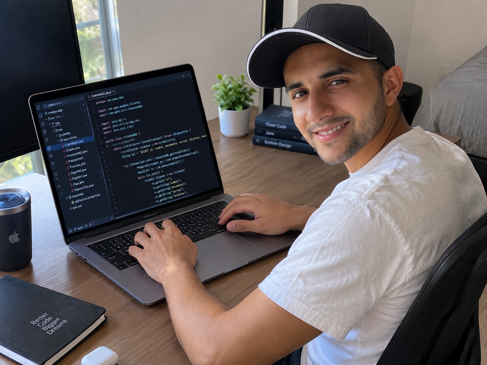

Aprender
Curiosidad constante y aprendizaje continuo.
HOLA, MUNDO. SOY DESARROLLADOR.
Soy desarrollador de software apasionado por la tecnología, la programación y la creación de experiencias digitales. Construyo soluciones que combinan lógica, creatividad y propósito.

01 — SOBRE MÍ
Me interesa entender cómo funcionan las cosas y convertir problemas reales en soluciones prácticas mediante el software.
Actualmente desarrollo mis habilidades en programación, diseño de aplicaciones, bases de datos e inteligencia artificial. Cada proyecto es una oportunidad para aprender algo nuevo y construir algo mejor.
Construyamos algo juntos ↗Curiosidad constante y aprendizaje continuo.
Ideas convertidas en proyectos funcionales.
Explorar nuevas formas de resolver problemas.
Mejorar con cada línea de código.
02 — PORTAFOLIO
Una selección de soluciones que he construido y las tecnologías que utilizo para hacerlas realidad.
Aplicación para administrar clientes, empleados, préstamos, pagos y saldos pendientes.
Ver repositorio ↗Exploración de aplicaciones web con Java, integración de modelos de lenguaje y servicios inteligentes.
Ver repositorio ↗Gestión de partidos, resultados, equipos y tablas de posiciones mediante programación orientada a objetos.
Ver repositorio ↗03 — TECNOLOGÍAS
Siempre explorando nuevas tecnologías y mejores prácticas.
04 — CONTACTO
Estoy abierto a conectar, compartir ideas y colaborar en proyectos que generen impacto.
CONOCE MÁS SOBRE MÍ
Descubre más sobre mí a través de este video.